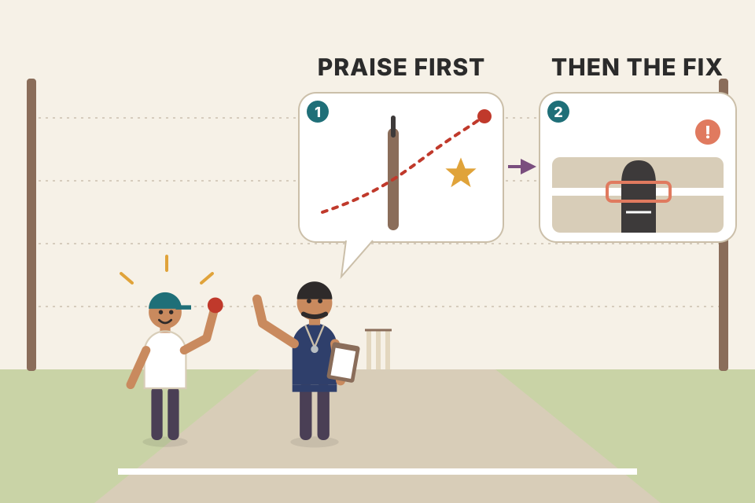
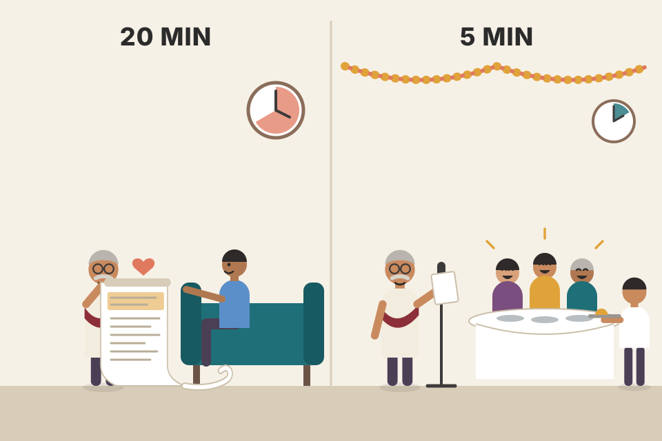
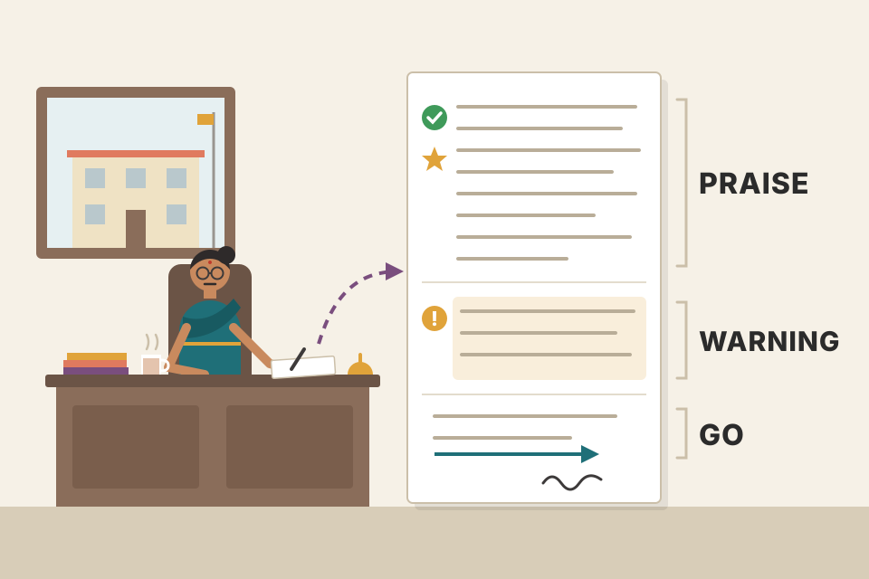
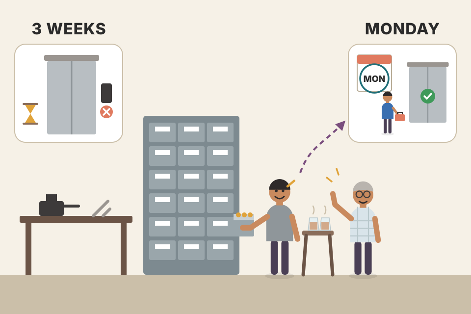
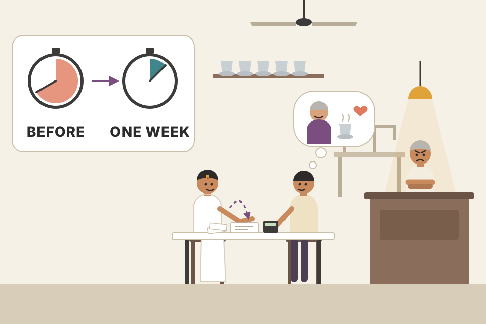

DALE CARNEGIE · HOW TO WIN FRIENDS · PART FOUR · CHAPTER 1 · PDF p198–203
If You Must Find Fault, This Is the Way to Begin
Before you point out what is wrong, say, honestly and specifically, what is right. People can hear a hard message once they know you see their good side.
Part Four of the book is about leading: changing what people do without hurting them or making them resent you. Its first move is simple. Open with sincere praise, then raise the problem. Carnegie shows it with a quick, almost clumsy compliment from President Coolidge, a gentle "no" from McKinley to an overexcited speechwriter, and a sharp letter from Lincoln to a general that still begins with the man's strengths. Then he brings it down to everyday business: a builder who rescued a late delivery without ever asking for it, and a credit-union manager who saved a trainee her colleague wanted fired. The praise does not replace the correction. It is what lets the correction get through.
Principle 1 of Part Four
Begin with praise and honest appreciation.
How the chapter fits together
pdf p197–198 · read this first
Where it sits. This is the first chapter of Part Four, "Be a Leader: How to Change People Without Giving Offense or Arousing Resentment" (pdf p197 is just the Part's title page). Part One opened with "don't criticize, condemn or complain", which left an obvious question hanging: what do you do when something really is wrong and has to change? Part Four is the answer, in nine principles across Ch.22 (this page) to Ch.30 (the Part's "In a Nutshell" list is on Ch.30). This chapter is step one. Just before it, Part Three (Ch.10 to Ch.21) was about winning people to your way of thinking; Part Four is about changing what they do, as a boss, a parent or a colleague.
The argument as a chain. Each row builds on the one before it.
Problemsomething must be corrected→but criticism makes people defend
Insightbad news lands softer after praise→barber lathers before he shaves
Famous casesCoolidge's secretaryMcKinley's speechwriterLincoln to Hooker
In businessGaw and the bronze makerWrublewski and the trainee→it works for ordinary people too
Imagepraise = Novocain→the drilling still happens
PrincipleBegin with praise and honest appreciation
Limitspraise must be truethe fix must still be madethe "but" can undo it (Ch.23)
About the title: "If you must find fault" is a quiet nod back to Part One. Carnegie still prefers not to criticize at all; this chapter is for the times you have no choice.
01 · THE OPENING STORY
Coolidge, a rare compliment, and the punctuation
pdf p198
Carnegie opens Part Four with a tiny scene that a friend of his saw while staying at the White House for a weekend during Calvin Coolidge's presidency.
The White House · 1920sPresident Calvin "Silent Cal" Coolidgeone of his secretaries
What happened. The friend wandered into the President's private office just as Coolidge was speaking to one of his secretaries. Coolidge, famous for saying very little and praising almost nobody, told her that her dress was pretty and that she was an attractive young woman. It was so out of character that she went red and did not know what to do.
The turn. Coolidge then told her, in effect, not to let it go to her head: he had only said it to make her feel good. And from now on, he would like her to be a little more careful with her punctuation.
"Now, don't get stuck up. I just said that to make you feel good."Calvin Coolidge, as reported to Carnegie (pdf p198)
Carnegie's verdict. He admits the method was "probably a bit obvious": Coolidge practically announced that the compliment was a set-up. But he calls the psychology excellent, and states the chapter's whole idea in one line: unpleasant things are easier to hear after we have heard some praise of our good points.
The book's image. A barber lathers a man's face before he shaves it. The blade still has to do its job; the lather makes it bearable. Carnegie uses this to move straight into the next story.
Dated example. A boss complimenting a young secretary on her dress and looks would be inappropriate in most workplaces today, and could be read as harassment. The lesson survives if you swap the subject: praise the work (her speed, her accuracy on the hard letters, how she handles callers), then raise the punctuation.
Picture it

A cricket coach at a district academy watches a young fast bowler. Before saying anything about the no-balls, he says: "That out-swinger in your third over was the best ball anyone bowled today." The boy glows. Then: "Now, your front foot is landing over the line. Let's fix that, because those wickets won't count." The boy goes straight to the crease to work on it.
Where it breaks: the coach's praise was true and about the bowling. Coolidge's was about looks and, by his own admission, said mainly to soften her up. If the boy suspected the out-swinger compliment was invented, the trick would collapse, which is why the principle says honest appreciation.
What's happening behind it
The book's explanation: criticism is easier to take once we have heard what is good about us. The praise reassures the listener that the speaker sees their value, so the correction feels like a comment on one thing they did, not a verdict on who they are.
Beyond the book: psychologists describe a threat response: when people feel their status or competence is under attack, they become defensive and take in less. Starting with genuine recognition lowers that sense of threat. Research on feedback also finds the opposite risk Carnegie half-admits with "a bit obvious": once people learn that praise is always the warm-up to criticism, they start to brace whenever they are praised.
At work
A code review that opens with "Line 14: wrong" gets a defensive reply. One that opens with what the PR does well (the clean interface, the edge case they caught) and then raises the bug usually gets "good catch, fixing". Make the praise specific and true, so it reads as attention, not as a ritual.
Interview angle. "How do you give feedback to someone on your team?" A good answer: you start with a specific strength you have seen, then name the issue clearly with an example, then agree on the next step. Mention that you keep the praise real, because people quickly learn to ignore a formula.
Rewrite it
Pick a blunt message. Decide how you would open it with honest praise, then reveal one version and what changed.
Carnegie says the barber's lather is exactly what William McKinley used in 1896, while he was running for President. This story is harder than Coolidge's: the person is proud and excited, and the answer has to be no.
The situation. A well-known party man had written a campaign speech and was sure it was better than anything by the great orators (the book names Cicero, Patrick Henry and Daniel Webster, all at once). Delighted with himself, he read it aloud to McKinley.
The problem. The speech had its good points, but it would not do. Delivered in the campaign, it would have stirred up a storm of criticism. McKinley faced three needs at once: he did not want to hurt the man, he did not want to kill his enthusiasm, and he still had to turn the speech down.
What McKinley said, in substance:
It is a splendid, magnificent speech; nobody could have written a better one.
There are many occasions where it would be exactly right. But is it right for this one?
From your point of view it is sound and sensible, but I have to think about how it will land for the party.
Go home, write a speech along the lines I suggest, and send me a copy.
The result. The man did exactly that. McKinley went over the second draft with a blue pencil (an editor's pencil) and helped him rewrite it, and the man became one of the most effective speakers of the campaign.
Why Carnegie admires it. McKinley never said the speech was bad. He made the problem about fit for the occasion, gave a reason from a wider view (the party's) that did not insult the writer, and handed him a clear next task. The writer left with his pride whole and his energy pointed in a better direction. Carnegie calls it adroit, meaning skilful.
Picture it

Your uncle has written a long, flowery welcome speech for your cousin's wedding reception and reads it to you, thrilled. It would go down well at a literary evening, but it runs twenty minutes, and the guests will be hungry. You say: "Chacha, the bit about their college days is wonderful, nobody else could write that. But tonight people will be waiting for dinner. Could you make a five-minute version around that part? I'll help you trim it." He comes back the next day with a short speech that gets the biggest laugh of the night.
Where it breaks: your uncle loves you and will forgive a clumsy note. McKinley was dealing with a powerful party figure he needed on his side, so the stakes of hurting his pride were higher, and the praise had to be more generous.
What's happening behind it
From the book: McKinley protected two things, the man's feelings and his "splendid enthusiasm". The praise kept both safe. The rejection then fell on the speech's fit, not on the man's ability, which is a judgement he could accept without losing face.
Beyond the book: giving the person a task back (rewrite it this way) keeps them in control of the result, which people value highly. They still own the second speech, so they put real effort into it. McKinley also paid with his own time, editing the draft with him, which made the praise believable.
At work
A keen junior engineer shows you a design doc for a full rewrite of the billing service in a new framework. It is well researched; it is also the wrong move this quarter. The McKinley version: "This is the most thorough comparison of the options anyone here has done. For a greenfield service it would be exactly right. For billing, mid-migration, I have to think about risk to revenue. Could you write up a version that gets us the two biggest wins inside the current stack? Send it over and we'll go through it together."
Interview angle. "Tell me about a time you rejected someone's idea." Show that you named what was good in it, explained the decision with the wider constraint, and gave them a path forward that kept them motivated. Mention what happened next (they shipped the smaller version, they stayed engaged).
Reflect, then reveal
A teammate proudly shows you a plan you have to turn down (a big refactor, a new tool, a conference talk outline). Write the first three sentences you would say.
Worked example: declining a talk proposal
The blunt no
"This won't work for the all-hands. It's too technical and way too long. Maybe next time."
Accurate. It also tells them their work was the problem, and "maybe next time" sounds like never. They will not volunteer again.
McKinley's no
"The latency deep-dive is excellent; the flame graphs alone would make a great internal blog post. For the all-hands, though, half the room is sales. Could you build a ten-minute version around the one chart that shows the 40% speed-up? Send me a draft and I'll help cut it."
The answer is still no to this version. They leave with a better plan and their enthusiasm intact.
Asking questions instead of giving orders ("is it suitable for this occasion?"): Part Four, Ch.4.
03 · THE HARDEST CASE
Lincoln's sharpest letter, to General Hooker, still starts with praise
pdf p199–200
Coolidge and McKinley were dealing with small things: punctuation, a speech. Carnegie now picks a case where the stakes were the survival of a country, and shows the same order of praise first, then fault.
Abraham LincolnGeneral Joseph Hookerdated 26 April 1863 in the booksold for $12,000 in 1926
The letter's fame. Carnegie calls it the second most famous letter Lincoln ever wrote. The most famous was his letter of sympathy to Mrs. Bixby, who had lost five sons in battle. Lincoln probably wrote the Hooker letter in about five minutes, yet it sold at auction in 1926 for twelve thousand dollars, which, Carnegie notes, was more than Lincoln managed to save in fifty years of hard work.
The moment. It was the darkest stretch of the Civil War. For eighteen months Lincoln's generals had led the Union army from one bloody defeat to the next, losses Carnegie calls pointless slaughter. The public was horrified, thousands of soldiers had deserted, and even Republican senators had turned on Lincoln and wanted him out of the White House. Lincoln himself said the country was on the edge of destruction and that he could barely see any hope. Into this he had to put a new man at the head of the main army, and the man had serious faults.
Why Carnegie includes it. It shows how Lincoln tried to change a difficult, headstrong general at a moment when the fate of the nation might depend on what that general did. It is perhaps the sharpest letter Lincoln wrote as President, and he still praised Hooker before naming his grave faults. He did not even call them grave. He wrote only that there were some things about Hooker he was "not quite satisfied" with. Carnegie's comment: talk about tact.
The letter, retold in order. (The letter is reproduced in full in the book; here is its shape in our words.)
Opening. I have put you in command of the Army of the Potomac, for reasons I think good enough. Still, you should know I am not quite satisfied with you on some points.
Praise. I believe you are brave and skilful, which I like. You keep politics out of your profession, which is right. You are confident, a valuable, almost essential quality. You are ambitious, which within reason does more good than harm.
First charge. But while General Burnside commanded the army, you let your ambition lead you to obstruct him as much as you could. That did a great wrong to the country and to a deserving, honourable fellow officer.
Second charge. I have heard, reliably, that you said the army and the government needed a dictator. I gave you command in spite of that, not because of it.
The turn. Only generals who win can set themselves up as dictators. What I want from you is military success, and I will take the risk of the dictatorship.
Support. The government will back you as fully as it can, no more and no less than it backs every commander.
Warning. I fear the habit you helped spread in the army, of criticising the commander and withholding trust, will now be turned on you. I will help you stamp it out. Neither you nor Napoleon could get anything out of an army in that mood.
Close. Beware of rashness, but with energy and constant watchfulness, go forward and win.
"Beware of rashness, but with energy and sleepless vigilance go forward and give us victories."Lincoln to Hooker, 1863, reprinted by Carnegie (pdf p200)
What to notice. The charges are serious (disloyalty to a fellow general, loose talk of dictatorship) and Lincoln names them plainly. He does not water them down. But every charge sits inside a frame of trust: you are capable, I chose you, I will support you, now go and win. The praise is not decoration; it is what makes the warning sound like a commander backing his general rather than a boss building a case.
Label the letter
Each line below is our paraphrase of a sentence in the letter, in order. Tag each one. When all twelve are done, you will see the letter's shape.
Tag all twelve lines to see the pattern.
Beyond the book: the history around the letter
Historians date this letter 26 January 1863, the day Hooker took command; the book's "April 26" appears to be a slip.
The letter did not produce the victories Lincoln asked for. In early May 1863 Hooker was badly beaten by Lee at Chancellorsville, and at the end of June he was replaced by General George Meade, who then fought Gettysburg. That is the same Meade whom Lincoln nearly scolded in the unsent letter of Part One, Ch.1. So the chapter shows the method of the letter, not proof that it worked.
On the Bixby letter: later research found that two of Mrs. Bixby's five sons died in battle, not all five, and some historians think Lincoln's secretary John Hay may have written it. The book repeats the version that was common in its day.
Picture it

A school principal in a small town writes to a brilliant but difficult new head of the science department. "I chose you because you are the best teacher we have, your students love you, and you don't play staff-room politics. But I know that under the last head you quietly worked against her, and I have heard you say the school needs a strong hand to 'clean it up'. I'm not asking for a strong hand; I'm asking for results in the board exams. I'll back you as I back every head. Watch out: the habit of grumbling about the head that you helped start may now point at you. Don't rush things. Go and make this department the best in the district."
Where it breaks: a school letter can be followed up over chai next week. Lincoln's general held thousands of lives, and the war would not wait. The letter had to do everything in one go, which is why it is so carefully built.
What's happening behind it
From the book: Lincoln wanted to change an "obstreperous" (unruly, hard to control) general, not crush him. Praise first told Hooker that the President saw his real strengths; only then would the charges sound like a fair assessment rather than an attack. The mild wording of the charge ("not quite satisfied") let a proud man hear it without losing face.
Beyond the book: notice how Lincoln turns one of the praised traits, ambition, into the bridge to the first criticism: "ambition within bounds is good, but you let it lead you to undermine Burnside". The praise and the fault are about the same trait, which makes the feedback feel balanced and true rather than a compliment glued onto a complaint.
At work
You promote a strong engineer to tech lead, knowing they have a habit of trashing other teams' designs in public. The Lincoln-shaped message for their first 1:1: "I picked you because you are the sharpest debugger we have and you never play politics about credit. Your confidence is a real asset. One thing I'm not quite satisfied with: in the last quarter, the way you criticised the platform team's API in open channels made their lead's job harder. As a lead, that habit will come back at you from your own team. I'll back you fully; what I want from you is a smooth Q3 launch. Don't rush the rewrite. Go and make it happen."
Interview angle. "How do you give feedback to a high performer with a behaviour problem?" Show the Lincoln order: genuine recognition of their strengths, a clear and specific naming of the behaviour with its cost, then what you expect and how you will support them.
Connects to
Lincoln's earlier lesson (the duel and the unsent letter to Meade): Part One, Ch.1.
Giving someone a fine reputation to live up to ("you are brave and skilful"): Part Four, Ch.7.
04 · IN EVERYDAY BUSINESS
W. P. Gaw and the bronze maker who held up a whole building
pdf p200–202
Carnegie anticipates the reader's objection: you are not a Coolidge, a McKinley or a Lincoln, so does this work in ordinary business dealings? His answer is a story about a construction deadline.
W. P. GawWark Company, Philadelphiabronze subcontractor, Brooklyncontract deadline
The situation. The Wark Company had a contract to finish a large Philadelphia office building by a fixed date. All was going well and the building was nearly done when the firm making the ornamental bronze work for the outside of the building said it could not deliver on time. One supplier was about to hold up the whole building, with heavy penalties and serious losses.
What failed first. Long-distance phone calls, arguments and heated exchanges. None of it changed anything.
What Gaw did. He went to New York to see the firm's president in person. Soon after they met, he mentioned that the president was the only person in the Brooklyn phone book with his name; Gaw had noticed it while looking up the address that morning. The president had never known that, checked the book with interest, and proudly explained that the name was unusual because his family had come from Holland and settled in New York nearly two hundred years earlier. He talked about his family for several minutes.
Gaw then complimented him on how big his plant was, comparing it well against similar plants he had visited, and called it one of the cleanest and neatest bronze factories he had ever seen. The owner said he had spent his life building the business and offered a tour. On the tour Gaw praised the way the work was organised and explained why it seemed better than some competitors'. He asked about some unusual machines; the owner had invented them himself and spent a long time showing how they worked and the quality they produced. Then he insisted on taking Gaw to lunch.
The ask that was never made. All this time, Gaw had said nothing about why he had come. After lunch the owner brought it up himself: he knew why Gaw was there, he had not expected to enjoy the meeting so much, and Gaw could go home with his promise that the bronze would be made and shipped even if other orders had to wait.
The result. Gaw got everything he wanted without asking for it. The material arrived on time, and the building was finished on the day the contract required.
Carnegie's question. Would the usual "hammer-and-dynamite" approach, the one most people use in this situation, have worked as well? The phone calls and arguments had already shown it would not.
Step through the story
What kind of praise it was. This is the most important detail in the story. Every compliment was specific and checkable: a fact about his name that Gaw had actually noticed, a plant that really was large and clean, a production system and home-made machines that really were good. Gaw was not reciting praise; he was paying close attention to what the man was proud of. That is why it came across as appreciation, not as flattery.
Picture it

Your society's lift has been broken for three weeks and the repair contractor keeps saying "next week" on the phone. One Saturday the secretary visits his small workshop in Peenya. He notices the neatly labelled spare parts and asks how he keeps such order; the owner, beaming, shows him a cabinet he designed himself and pours two cups of tea. Before the secretary can raise the lift, the owner says, "I know, I know, your building. I'll send my best man on Monday morning." He does.
Where it breaks: this works when the other side can help and simply has no reason to put you first. If the contractor truly had no parts or no staff, no amount of appreciation would fix the lift; praise changes priority and goodwill, not physical limits.
What's happening behind it
From the book: the subcontractor was proud of his name, his family, his plant and his inventions. Gaw spoke to that pride with genuine interest, and the man wanted to help someone who valued what he valued. By the time business came up, Gaw was a friend, not a creditor.
Beyond the book: two well-studied effects are visible here. Liking: people say yes more readily to those who show they like and appreciate them (one of Robert Cialdini's principles of influence). Reciprocity: Gaw had given time, attention and recognition, and the owner returned the favour unprompted. Note also that Gaw went in person after the phone failed; face-to-face contact makes both effects much stronger.
At work
An internal platform team keeps slipping on the one API change your feature needs. Escalating through tickets and status meetings is the hammer-and-dynamite route. The Gaw route: go and sit with their lead. Mention, truthfully, what you admire about their system (the zero-downtime deploys, the clean docs, the on-call runbook that saved you last month). Ask how they built it. Often the lead will raise your request before you do, and move it up the queue.
Interview angle. "Tell me about a time you needed something from a team that didn't report to you." Strong answers show you built goodwill first, through real interest in their work and their constraints, instead of escalating. Then say what happened to the deadline.
Worked example: chasing a late vendor
Hammer and dynamite
"This is the third time the integration build has slipped. Our launch is in two weeks. If we don't have it by Friday we'll have to escalate to your leadership and review the contract."
True and fair. It puts them on the defensive, and you join every other angry client in their queue.
The Gaw approach
(On a video call with their engineering lead.) "Before anything else, your webhook retry design is the best we've integrated with; our on-call hasn't had a single missed event. How did your team build it?" ... (later) "We're in a tight spot on the integration for our launch in two weeks. Is there anything we can do on our side to help you get it done?"
Specific, true praise first. The deadline is still named, but as a shared problem.
Connects to
Talking in terms of the other person's interests (his name, his factory): Part Two, Ch.5.
Making the other person feel important, sincerely: Part Two, Ch.6.
05 · SAVING A NEW HIRE
Dorothy Wrublewski and the trainee who couldn't balance the drawer
pdf p202
The last story is the closest to everyday management: a manager, an employee with one weak spot, and a colleague who wants her gone. Wrublewski reported it in one of Carnegie's classes.
Dorothy Wrublewskibranch managerFort Monmouth Federal Credit Union, New Jerseya teller trainee
The situation. The branch had recently hired a young woman as a teller trainee. She was very good with customers, and accurate and efficient with individual transactions. The trouble came at the end of each day, when the tellers had to balance their cash drawers: she was so slow that everyone else had to wait.
The pressure. The head teller came to Wrublewski and pushed hard for the trainee to be fired. Her case: the trainee was holding everyone up, the head teller had shown her the procedure again and again, she still could not get it, so she had to go.
What Wrublewski did.
She looked for herself first. The next day she watched the trainee at work: quick and accurate on the normal daily transactions, and pleasant with customers.
She found the cause. It did not take her long to see why balancing was the problem (the book does not spell it out, but what follows suggests nerves and lack of confidence more than lack of ability).
She praised the real strengths. After closing she went to talk with the trainee, who was clearly nervous and upset. She praised her for being friendly and outgoing with customers, and for her speed and accuracy in that work.
Then she taught the weak step. She suggested they go over the procedure for balancing the cash drawer together.
The result. Once the trainee realised her manager had confidence in her, she followed the suggestions easily and soon mastered balancing. In Wrublewski's words, there were no problems with her after that.
The contrast that matters. The head teller had already shown the procedure "over and over". The instructions were not the missing piece. What changed was the frame around them: the trainee heard first that she was valued and good at most of the job, and that made the same lesson learnable.
Dated wording. The book's "young lady" reflects its time; today we would just say "a new trainee".
Which response? (the Wrublewski test)
Pick a response to see how Carnegie would judge it.
Picture it

A new waiter at a busy Udupi restaurant in Chennai is the regulars' favourite: he remembers who takes filter coffee without sugar and never mixes up an order. But at closing he is always last to tally his bills, and the senior waiter tells the owner, "He's useless, let him go." The owner watches one evening, then sits with the boy after closing: "Customers ask for you by name. Your orders are never wrong. Let's do the tally together tonight, I'll show you my shortcut." In a week he is the fastest to close.
Where it breaks: in the restaurant (and the credit union) the weak skill was small and teachable. If someone is strong at the parts that don't matter for the role and weak at the core of it, praise and patience may not be enough, and the honest answer may still be a different role.
What's happening behind it
From the book: the key phrase is that the trainee improved once she realised her manager had confidence in her. Praise for what she did well proved that confidence. A nervous, upset person who hears only about their failure gets more nervous; one who hears that they are valued has room to learn.
Beyond the book: anxiety is known to eat into working memory, the mental space you need to learn and follow a new procedure. That fits the story: the trainee could not take in the same instructions while she was scared, and could once she felt safe. Research on "psychological safety" in teams (Amy Edmondson's work) points the same way: people learn and admit gaps more readily when they don't fear being judged.
At work
A senior engineer says a new hire "isn't working out" because their PRs take forever. Before agreeing, look yourself, as Wrublewski did. Maybe the new hire writes clear code, asks good questions and is great with the product team, and the slowness comes from one thing: fear of breaking the CI pipeline nobody explained. Then the 1:1 writes itself: name the real strengths, show confidence, and walk through the one weak step together.
Interview angle. "Tell me about a time you turned around an underperformer." This story is the model answer: you didn't take the complaint at face value, you observed, you found the one specific gap, you started with what they did well, you fixed the gap together, and you can say what changed afterwards.
Worked example: the 1:1 after the complaint
The head teller's version
"I've had feedback that your PRs are holding the team up. You've been shown how the release process works several times. I need to see this improve quickly."
All true. To an anxious new hire, it sounds like the first step toward being let go, and anxiety makes learning harder.
Wrublewski's version
"I've been looking at your work this week. Your code is some of the cleanest on the team, and the product folks love how you explain trade-offs. The one place you lose time is getting PRs through the release checks, and honestly, that process is badly documented. Want to do the next one together?"
Praise that is specific and earned, then the one gap, framed as fixable, with help offered.
Connects to
Making the fault seem easy to correct and showing confidence in the person: Part Four, Ch.8.
Novocain before the drill: Principle 1 of Part Four
pdf p202–203
Carnegie's closing image. Starting with praise is like a dentist who begins with Novocain, the local anaesthetic. The patient still gets drilled; the Novocain takes the pain out of it. A leader, he says, will use this:
Principle 1 of Part Four
Begin with praise and honest appreciation.
Read the image carefully. It carries two halves of the principle, and both matter:
The drilling still happens
Praise is not a replacement for the correction. Coolidge still raised the punctuation, McKinley still rejected the speech, Lincoln still named Hooker's faults, Wrublewski still retaught the cash drawer. If you only give the Novocain, the tooth stays rotten.
The Novocain must be real
"Honest appreciation" is in the principle on purpose. Gaw's compliments were all true and specific. Fake praise is like a placebo injection: once the patient notices, they trust nothing you inject after that.
The chapter's five cases, side by side.
Who
The praise
The fault or the "no"
Outcome in the book
Coolidge
Pretty dress, attractive young woman (dated; praise the work today)
Be more careful with punctuation
Method "obvious", psychology "superb"
McKinley
Splendid, magnificent speech
Not right for this occasion; rewrite along my lines
Rewritten speech; he became an effective campaign speaker
Undermined Burnside; talked of a dictator; beware rashness
The book shows the method (see the history note for what followed)
Gaw
Rare name, family history, clean big plant, his own machines
The late bronze delivery (never even raised)
Shipped on time; building finished on the contract date
Wrublewski
Friendly with customers, fast and accurate
Slow at balancing the cash drawer
Mastered it; no problems since
Picture it
A good physiotherapist in a Kochi clinic, before working on a stiff shoulder, says: "Your range of movement has come back a lot since last week, you've clearly been doing the exercises." Then she presses on the painful spot. It still hurts, but you trust her, you breathe through it, and you come back next week.
Where it breaks: a numbing injection works whether you believe in it or not. Praise works only if the listener believes it. Say "great progress" to someone who knows they skipped every exercise and the "anaesthetic" turns into a reason to doubt the rest of what you say.
What's happening behind it
From the book: Carnegie's whole argument is in the Novocain line: the pain of criticism is unavoidable, but how much it hurts, and so how defensive the person becomes, depends on what comes first. Praise reduces the pain, and less pain means less resistance to the change you need.
Beyond the book: management writers later turned this into the "feedback sandwich" (praise, criticism, praise). Studies and many practitioners have found that a mechanical sandwich often fails: the praise becomes predictable, people learn to wait for the "but", and the main message can get lost. The parts that hold up are Carnegie's actual words: honest appreciation, said first, then a clear correction. The next chapter (Ch.23) addresses the "but" problem directly.
At work
Performance reviews are where this is used most and done worst. A review that opens with a generic "you're a valued member of the team" and then lists five gaps is a formula people see through. One that opens with two concrete wins ("the cache redesign cut p99 latency by 30%; the way you ran the March incident was textbook") makes the growth areas that follow believable, because the reader can tell you really looked at their work.
Interview angle. If an interviewer asks "What do you think of the feedback sandwich?", a strong answer: the idea underneath (start with honest, specific appreciation so the person can hear the hard part) is sound, but used as a formula it backfires. Keep the praise true and specific, make the correction unmistakable, and don't fake balance.
Self-audit: this week, did I…
Connects to
The next principle, on how to raise the fault after the praise: Part Four, Ch.2.
Why the praise must be honest, and how it differs from flattery: Part One, Ch.2.
The full Part Four list of principles ("In a Nutshell"): Part Four, Ch.9.
07 · WRAP-UP
Summary and key terms
pdf p197–203
Part Four ("Be a Leader: How to Change People Without Giving Offense or Arousing Resentment") answers the question Part One left open: what to do when something really has to be corrected.
The core idea: unpleasant things are easier to hear after we have heard praise of our good points. A barber lathers before he shaves; a dentist uses Novocain before he drills.
Coolidge complimented a secretary, then asked for better punctuation. The method was obvious; the psychology sound. (Praise of looks is dated; praise the work.)
McKinley called an unusable campaign speech splendid, questioned its fit for the occasion, cited the party's view, and sent the writer home to rewrite it with help. The man became an effective campaign speaker.
Lincoln, in his sharpest letter as President, praised Hooker's bravery, skill, professionalism, confidence and ambition before naming his faults (undermining Burnside, dictator talk), mildly calling them things he was "not quite satisfied" with. The letter sold for $12,000 in 1926.
W. P. Gaw saved a late bronze delivery by sincerely admiring the supplier's name, plant and inventions; the supplier promised delivery without being asked, and the building was finished on time.
Dorothy Wrublewski watched a trainee the head teller wanted fired, praised her real strengths, then retaught the one weak procedure; once the trainee felt trusted she mastered it.
Principle 1 of Part Four: Begin with praise and honest appreciation. The praise must be true, and the correction must still be made.
Term or phrase
Meaning on this page
Where
Principle 1 of Part Four
Begin with praise and honest appreciation.
pdf p203
Be a Leader
Part Four's theme: change people without giving offence or arousing resentment.
pdf p197
The barber's lather
Praise before the "shave" of criticism; the blade still cuts, but it hurts less.
pdf p198
"A bit obvious"
Carnegie's own caveat on Coolidge: transparent praise is clumsy, even if the psychology is right.
pdf p198
Fit for the occasion
McKinley's reframing: the problem is not the quality of the work but where it is used.
pdf p198–199
Blue-pencil
To edit a draft (editors used blue pencils); McKinley helped rewrite the second speech.
pdf p199
"Not quite satisfied"
Lincoln's mild wording for grave faults; tact that lets a proud person hear the charge.
pdf p199–200
Hammer and dynamite
The usual pressure approach (calls, arguments, threats) that Gaw did not use.
pdf p202
Confidence in the person
What made Wrublewski's trainee able to learn; praise was the proof of it.
pdf p202
Novocain
Praise as an anaesthetic: the drilling (correction) still happens.
pdf p202
08 · USE IT
Practice this week
beyond the book
Small exercises, each with a way to tell whether it worked. The exercises are ours; the ideas are the chapter's.
One true thing first. Before every piece of corrective feedback this week (PR comments, 1:1s, at home), write down one specific, true strength of that person's work and say it first. Worked if: fewer of your comments get a defensive reply, and the fixes come back faster.
The specificity test. Read back each compliment you give. Could it be said to anyone ("nice work", "great job")? Rewrite it until it could only be about this person and this piece of work. Worked if: people reply to the praise itself ("thanks, that part took ages").
The McKinley no. The next time you must turn down someone's idea, use the four moves: real praise, question the fit, give the wider reason, hand back a task and offer help. Worked if: they come back with a revised version instead of going quiet.
The Gaw visit. Pick one person or team that is slow to help you. Instead of chasing again, spend ten minutes learning about something they are proud of, and say what you genuinely admire. Do not raise your request first. Worked if: they move your request up, or raise it themselves.
The Wrublewski check. When someone complains about a colleague, watch the colleague's work yourself before acting. List what they do well before you list the gap. Worked if: you find the gap is narrower than the complaint suggested.
Drop the instant "but". After your praise, pause or use "and", and see whether the praise is still heard. Worked if: the person does not visibly brace when you start with something positive.
09 · LIMITS
Where it can go wrong
pdf p198–203 · plus beyond the book
The book's own caveats first.
It can be too obvious. Carnegie says plainly that Coolidge's method was "probably a bit obvious". Praise that announces itself as a softener ("I only said that to make you feel good") works despite itself, not because of it.
The praise must be honest. The principle says "honest appreciation", and the book's best stories (Gaw, Wrublewski) use praise that was specific and true. Part One already drew the line: appreciation is sincere, flattery is not, and people see through flattery (Ch.2).
The correction still happens. Novocain does not replace the drilling. In every story the fault was fixed, the speech rewritten, or the charge made.
The chapter is only step one. How you move from the praise to the fault (and the danger of "but") is the next chapter, Ch.23.
Beyond the book: our critique
The formula problem. Turned into a fixed "praise, criticism, praise" routine, this teaches people that every compliment is a warning. Then your genuine praise stops working too. Vary it: sometimes give praise with no correction at all.
Don't bury the message. Too much warm-up and the listener may miss the point entirely, especially in a direct culture or on a serious issue. For a safety problem, a security hole or misconduct, say it clearly and early; praise can come after, or not at all.
Manipulation risk. Gaw's story can be read as "flatter people to get what you want". The difference is whether the interest is real. If you would not have admired the factory unless you needed the bronze, people often sense it.
Praise about the person's looks or identity (the Coolidge example) is out of place at work. Praise the work, the effort, the judgement.
Culture changes the dial. In many Indian workplaces, praise from a senior is rare enough that it can make the listener suspicious ("what's coming?"). That makes specificity even more important. In very direct cultures, long preambles can read as evasive.
Not every gap closes. Wrublewski's trainee had one teachable weak spot. When the gap is at the core of the role, kind framing does not change the outcome; honesty about fit may be the respectful choice.
The history does not prove the method. Hooker lost at Chancellorsville soon after the letter. The stories show how to deliver criticism, not that delivery decides results.
10 · TEST YOURSELF
Check yourself
pdf p197–203
Try to answer before opening each one. The first half is story recall; the second half is using the principle.
1. What is the full title of Part Four, and what problem does it answer?
"Be a Leader: How to Change People Without Giving Offense or Arousing Resentment." It answers the question left by Part One's "don't criticize": what to do when something really must change.
2. What did Coolidge say to his secretary, and what did Carnegie think of it?
He complimented her dress and looks, told her not to get conceited because he had said it to make her feel good, and asked her to be more careful with her punctuation. Carnegie said the method was a bit obvious but the psychology superb: bad news is easier to hear after praise.
3. What two images does Carnegie use for beginning with praise?
A barber lathering a face before shaving it, and a dentist giving Novocain before drilling. In both, the painful part still happens; it just hurts less.
4. How did McKinley turn down the campaign speech, and what became of the writer?
He called it splendid and magnificent, said it would be right on many occasions but asked whether it suited this one, explained he had to think of the effect on the party, and asked the man to write a new one along lines he suggested. He edited the second draft with him, and the man became one of the campaign's effective speakers.
5. What facts does Carnegie give about the Hooker letter's fame and setting?
Second most famous Lincoln letter (after the Bixby letter); probably written in five minutes; sold in 1926 for $12,000, more than Lincoln saved in fifty years; written (the book says 26 April 1863) after eighteen months of Union defeats, mass desertions, and Republican senators wanting Lincoln out.
6. What did Lincoln praise in Hooker, and what did he criticise?
Praise: brave, skilful, kept politics out of soldiering, self-confident, ambitious within reason. Criticism: he had obstructed General Burnside out of ambition, and he had said the country needed a dictator. Lincoln then asked for victories, promised support, warned that the spirit of criticising commanders would turn on him, and told him to beware of rashness but go forward.
7. How did W. P. Gaw get the late bronze work delivered on time?
He visited the subcontractor's president, opened by noting he was the only person in the Brooklyn phone book with his name, let him talk about his Dutch family history, praised his large, clean plant, his production system and his self-invented machines, toured the factory and had lunch, and never mentioned the delay. The owner raised it himself and promised to ship even if other orders were delayed.
8. What did the head teller want, and what did Dorothy Wrublewski do instead?
The head teller wanted the slow trainee fired. Wrublewski watched her work, saw she was fast, accurate and friendly in normal transactions, then after closing praised those strengths and suggested they review the balancing procedure together. Once the trainee felt her manager's confidence, she mastered it.
9. What is Principle 1 of Part Four, and what does the word "honest" add?
"Begin with praise and honest appreciation." "Honest" rules out flattery: the praise must be true and, ideally, specific, as in Gaw's and Wrublewski's stories. Fake praise destroys trust in everything you say after it.
10. Application: a teammate's PR is well structured but has a race condition. Write the opening of a Carnegie-style comment.
Something like: "The way you split the worker pool from the queue logic makes this really easy to follow. One thing I want to look at before merge: lines 60 to 75 can race if two workers pick up the same job. Could we add a lock or an idempotency key there?" True praise first, then the specific problem and a suggested fix.
11. Application: you have to tell an enthusiastic junior that their proposed migration won't happen this quarter. Use McKinley's moves.
Praise what is genuinely strong in the proposal; say it would be right in another situation but question its fit for this quarter; explain the wider constraint (risk, roadmap, on-call load); give them a smaller task (a two-week spike, a write-up for next quarter) and offer to review it with them.
12. Application: a dependency team keeps slipping. Your manager says "escalate". What would Gaw do first?
Meet their lead in person or on a call, show real interest in something they are proud of (their system, their tooling, a hard problem they solved), and build goodwill before raising the request. Escalation is the hammer and dynamite; keep it for when goodwill fails.
13. Interview: "Tell me about a time you helped an underperformer." How does this chapter shape a strong answer?
Follow the Wrublewski arc: you did not accept the complaint at face value, you observed, you found the one specific gap, you opened the conversation with their real strengths, you fixed the gap together, and you can name the result. Show that the praise was specific and earned.
14. Interview: "What do you think of the feedback sandwich?"
The idea underneath is sound (open with honest appreciation so the person can hear the hard part), but used as a fixed formula it teaches people to wait for the "but" and can bury the message. Keep the praise specific and true, make the correction clear, and don't fake balance.
15. What is the main way this principle goes wrong?
Two opposite ways: praise that is not honest (flattery, which people see through), and praise with no correction (Novocain with no drilling, so nothing changes). A third: an instant "but" that erases the praise, which the next chapter deals with.
11 · SOURCES
References
pdf p197–203
Book pages and other sources used on this page
Dale Carnegie, How to Win Friends and Influence People, revised edition (1981; Simon & Schuster 2009 printing), Part Four, Chapter 1, "If You Must Find Fault, This Is the Way to Begin", pdf p198–203 (Part Four title page pdf p197). Stories by page: Coolidge and the barber's lather p198; McKinley p198–199; Lincoln's letter to Hooker p199–200; W. P. Gaw p200–202; Dorothy Wrublewski and the Novocain image p202; Principle 1 p203.
Abraham Lincoln, letter to General Joseph Hooker (1863), reprinted in the chapter (pdf p199–200). Retold briefly here, not reproduced.
Beyond the book (named where used): R. Cialdini, Influence (liking and reciprocity); A. Edmondson on psychological safety in teams; research on anxiety and working memory; writing on the "feedback sandwich" and its limits.
Historical notes (Beyond the book): the date of the Hooker letter (26 January 1863) and the Battle of Chancellorsville (May 1863); Meade's appointment in June 1863; later research on the Bixby letter (two sons killed; authorship sometimes credited to John Hay).